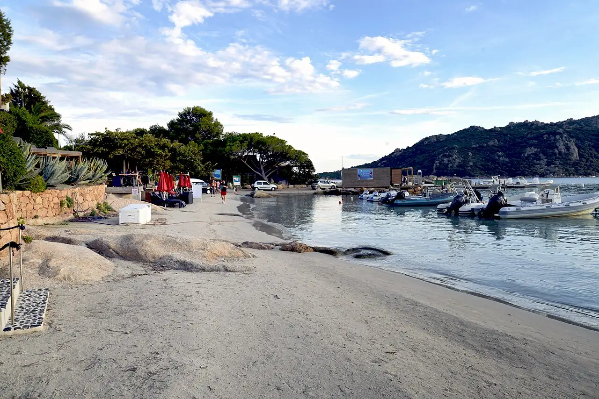

Santa Giulia
Porto-Vecchio, Corse-du-Sud, France · baignade, paddle, kayak, snorkeling

Baie en arc de cercle au sud de Porto-Vecchio, au sable blanc et à l’eau turquoise très peu profonde. Parfaite en famille, en paddle ou en kayak, avec quelques rochers à explorer au masque sur les pointes.
- Lieu
- Porto-Vecchio, Corse-du-Sud, France
- Niveau
- Débutant
- Activités
- baignade, paddle, kayak, snorkeling
- Type d'eau
- Mer / océan
- Coordonnées
- 41.53, 9.27 (position approximative du secteur)
Dangers à connaître
- Bateaux et jet-skis nombreux hors de la zone balisée.
- Très forte fréquentation et chaleur en été.
Le conseil d'Ocean Buddy
Viens tôt le matin en été, avant l’arrivée des bateaux et de la foule.
Ouvrir dans Ocean Buddy Télécharger sur l'App Store
Source : Fiche Ocean Buddy · septembre 2026 · à vérifier localement.